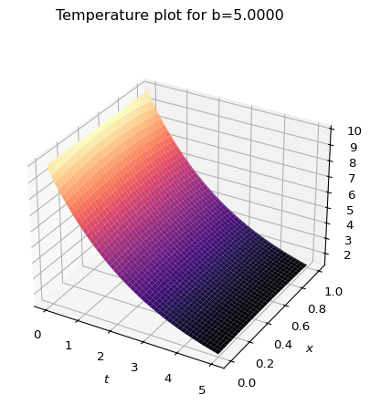
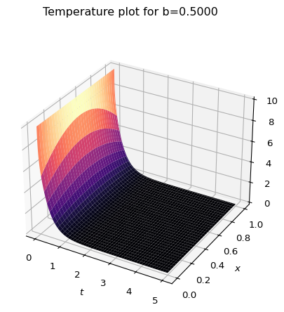
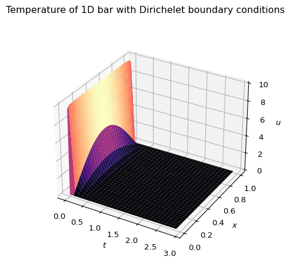
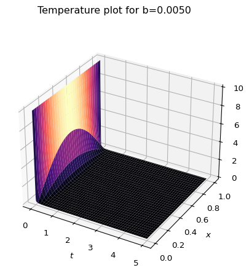

import numpy as np
N = 101
h = 1/(N-1)
initTemp = 10
xi = np.linspace(0,1,N)
u0 = initTemp * np.ones(N)In my last post, I spoke about the issues with modeling a real-world system using the heat equation. Even the simplest 1D system promised some degree of pain. So I wanted to begin discussing numerical methods. I’ve been going through some materials created by the fenics project, and while what I’m presenting below will be somewhat based on those methods, I’m going to skip using their package (for now).
Applying the Finite Element Method to the 1D Robin problem
In my last post, I gave myself the following challenge:
Your mission, should you choose to accept it, is to model a 1D object that has a length of 1, with a uniform initial temperature \(T_0\). The exterior temperature at each end of the rod is 0. Assume no heat escapes along the length of the rod.
Let’s apply the Finite Element method to this problem. In general the setup is the same. We have: 1. The (1D) Heat Equation: \[ \frac{\partial u(x,t)}{\partial t} - \frac{\partial^2 u(x,t)}{\partial x^2} = 0 \] 2. The Initial Condition: \(u(x,0)=T_0\). 3. The Boundary conditions, one for each end at \(x=0\) and \(x=1\) \[ u(0,t) + b \left. \frac{\partial u(x,t)}{\partial x}\right|_{x=0} = 0 \qquad \text{and} \qquad u(1,t) - b\left. \frac{\partial u(x,t)}{\partial x}\right|_{x=1} = 0 \]
Step 1: Discretize the time variable.
Instead of doing separation of variables using the usual analytic methods, we are going to define:
\[ u^k(x) = u(x,t_k) \] where \(t_k = k \Delta t\). The parameter \(\Delta t\) is something that can be freely chosen, and \(k\) is an index \((0,1,2,\ldots)\). Substituting this in, we can write the following: 1. The (1D) Heat Equation: \[ \frac{u^k(x)-u^{k-1}(x)}{\Delta t} - \frac{d^2 u^k(x)}{dx^2} = 0 \] 2. The Initial condition: \[ u^0(x) = T_0 \] 3. The boundary conditions: \[ u^k(0) + b \left. \frac{du^k(x)}{dx}\right|_{x=0} = 0 \qquad \text{and} \qquad u^k(1) - b \left. \frac{du^k(x)}{dx}\right|_{x=1} = 0 \]
Step 2: Convert the Heat Equation to a weak formulation
This is done by multiplying the PDE by a test function \(v(x)\) and integrating over the region of interest (in this case, \(x\in[0,1]\)). \[ \int_0^1 v(x) u^k(x) dx - \Delta t \int_0^1 v(x) \frac{d^2u^k(x)}{dx^2} dx = \int_0^1 v(x) u^{k-1}(x) dx \]
We can now integrate the second term by parts: \[ \begin{align*} \int_0^1 v(x) \frac{d^2u^k(x)}{dx^2} dx &= \left[ v(x) \frac{du^k(x)}{dx} \right]_0^1 - \int_0^1 \frac{dv(x)}{dx} \frac{du^k(x)}{dx} dx \\ &= \left[ -v(1) \frac{u^k(1)}{b} - v(0) \frac{u^k(0)}{b} \right] - \int_0^1 \frac{dv(x)}{dx} \frac{du^k(x)}{dx} dx \\ \end{align*} \] where the term in square brackets is given by applying the boundary conditions. So now we have two things to keep track of:
- The Initial condition: \[ u^0(x) = T_0 \]
- The weak formulation of the PDE/boundary condition \[ \begin{align*} \int_0^1 v(x) u^{k-1}(x) dx = \int_0^1 v(x) u^k(x) dx &+ \Delta t \int_0^1 \frac{dv(x)}{dx} \frac{du^k(x)}{dx} dx \\ & + \frac{\Delta t}{b} \left[ v(1) u^k(1) + v(0) u^k(0) \right] \end{align*} \] Notice that the LHS of this equation depends on the test function \(v(x)\) and the solution of the heat equation at the previous time-step \(u^{k-1}(x)\).
Step 3: Discretize the spatial variable
Ultimately, this step will allow us to solve this problem as a linear-algebra problem, which is something that computers have been optimized to do very well. We do this by assuming the following: \[ u^k(x) = \sum_{j=1}^N u_j^k \varphi_j(x) \] where \(x_j = \frac{j-1}{N-1}\), \(h=\frac{1}{N}\) and \[ \varphi_j(x) = \begin{cases} \left(1-\frac{\left|x-x_j\right|}{h}\right) &\left|x-x_j\right|\leq h \\ 0 & \text{else} \end{cases} \] This creates a uniform lattice of points. It should be noted that this choice of \(\varphi_j(x)\) is method dependant. Also, when working in higher dimensions, a cartesian grid is not optimal. But this is what I’ll use for this problem.
Simplify the Initial condition
Let’s insert this definition of \(u^k(x)\) into our initial condition, multiply by \(\varphi_i(x)\), and integrate over the region of interest: \[ \int_0^1 dx \varphi_i(x) \sum_{j=1}^N u^0_j \varphi_j(x) = \int_0^1 dx \varphi_i(x) T_0 \] We can simplify this by calculating the integrals: \[ \int_0^1 dx \varphi_i(x) = \begin{cases} \frac{h}{2} &i=1 \text{ or } i=N \\ h & \text{else} \end{cases} \] and \[ \int_0^1 dx \varphi_i(x) \varphi_j(x) = \begin{cases} \frac{h}{3} & (i=j=1) \text{ or } (i=j=N) \\ \frac{2h}{3} & (i=j) \text{ and } (i\neq 1 \text{ or } i\neq N) \\ \frac{h}{6} & j=i\pm 1 \\ 0 &\text{else} \end{cases} \]
Re-arranging terms, we can find \(N\) equations: \[ \begin{align*} 2 u_1^0 + u_2^0 = 3 T_0 &\qquad i=1 \\ u_{i-1}^0 + 4 u_i^0 + u_{i+1}^0 = 6 T_0 &\qquad i\neq 1, i\neq N \\ u_{N-1}^0 + 2u_N^0 = 3 T_0 &\qquad i=N \end{align*} \]
Since the initial temperature is uniform, this (quite sensibly) can be solved as: \[ u_i^0 = T_0 \]
Simplify the weak formulation
Next we will simplify the weak formulation describing the PDE and Boundary conditions assuming \[ u^k(x) = \sum_{j=1}^N u_j^k \varphi_j(x) \] and \[ v(x) = \varphi_i(x) \]
Plugging this in we get: \[ \begin{align*} \sum_{j=1}^N u_j^{k-1} \int_0^1 dx \varphi_i(x) \varphi_j(x) = &\sum_{j=1}^N u_j^k \int_0^1 dx \varphi_i(x) \varphi_j(x) \\ &+ \sum_{j=1}^N \Delta t u_j^k \int_0^1 dx \frac{d\varphi_i(x)}{dx} \frac{d\varphi_j(x)}{dx} \\ &+ \frac{\Delta t}{b} \sum_{j=1}^N \left[ \varphi_i(1) u^k_j \varphi_j(1) + \varphi_i(0) u^k_j \varphi_j(0) \right] \end{align*} \]
We can simplify this again, but we will need to consider the integral below in addition to other integrals we have calculated previously. \[ \int_0^1 dx \frac{d\varphi_i(x)}{dx} \frac{d\varphi_j(x)}{dx} = \begin{cases} \frac{1}{h} & (i=j=1) \text{ or } (i=j=N) \\ \frac{2}{h} & (i=j) \text{ and } (i\neq 1 \text{ or } i\neq N) \\ -\frac{1}{h} & j=i\pm 1 \\ 0 &\text{else} \end{cases} \]
Finally, we will note that by the definition of our \(\varphi_i(x)\) function, we can simplify the values on the boundary as follows: \[ \varphi_i(0) = \delta_{i1} \qquad \text{and} \qquad \varphi_i(1) = \delta_{iN} \]
This leaves us with the following system of \(N\) equations to solve: \[ \begin{align*} 2\left(1+\frac{3(b+h)\Delta t}{bh^2}\right) u_0^k + \left(1-\frac{6\Delta t}{h^2}\right)u_1^k &= 2u_0^{k-1} + u_1^{k-1} \quad i=1 \\ \left(1-\frac{6\Delta t}{h^2}\right)u_{N-1}^k + 2\left(1+\frac{3(b+h)\Delta t}{bh^2}\right) u_N^k &= u_{N-1}^{k-1} + 2u_N^{k-1} \quad i=N \\ \left(1-\frac{6\Delta t}{h^2}\right)u_{i-1}^k + 4\left(1+\frac{3\Delta t}{h^2}\right) u_i^k + \left(1-\frac{6\Delta t}{h^2}\right)u_{i+1}^k &= u_{i-1}^{k-1} + 4u_i^{k-1} + u_{i+1}^{k-1} \\ &\qquad i\neq 1 \text{ and } i\neq N \\ \end{align*} \]
This looks somewhat intimidating, but if we define: \[ A = 2\left(1+\frac{3(b+h)\Delta t}{bh^2}\right) \quad B=4\left(1+\frac{3\Delta t}{h^2}\right) \quad C=\left(1-\frac{6\Delta t}{h^2}\right) \] we get \[ \begin{align*} A u_0^k + C u_1^k &= 2u_0^{k-1} + u_1^{k-1} &\quad i=1 \\ C u_{N-1}^k + A u_N^k &= u_{N-1}^{k-1} + 2u_N^{k-1} &\quad i=N \\ Cu_{i-1}^k + B u_i^k + Cu_{i+1}^k &= u_{i-1}^{k-1} + 4u_i^{k-1} + u_{i+1}^{k-1}&\quad i\neq 1 \text{ and } i\neq N \\ \end{align*} \] We can turn this into a matrix equation: \[ K U = G \] where \(U\) is a \((N\times 1)\) matrix made up of the \(u_i^k\)’s, \(K\) is (assuming \(N=5\))
\[ K = \begin{bmatrix} A & C & 0 & 0 & 0 \\ C & B & C & 0 & 0 \\ 0 & C & B & C & 0 \\ 0 & 0 & C & B & C \\ 0 & 0 & 0 & C & A \end{bmatrix} \] and \(G = G_s u^{k-1}\) is made from the right hand side of the above equation:
\[ G_s = \begin{bmatrix} 2 & 1 & 0 & 0 & 0 \\ 1 & 4 & 1 & 0 & 0 \\ 0 & 1 & 4 & 1 & 0 \\ 0 & 0 & 1 & 4 & 1 \\ 0 & 0 & 0 & 1 & 2 \end{bmatrix} \] and \[ u^{k-1} = \begin{bmatrix} u^{k-1}_1 \\ u^{k-1}_2 \\ u^{k-1}_3 \\ u^{k-1}_4 \\ u^{k-1}_5 \end{bmatrix} \]
Let’s make code!
Let’s make some computational choices and code this up. First, I’ll begin by setting up the initial condition.
Next, I’ll define the matrices on the LHS and RHS of the equation above, as well as a few parameters.
b = 1
Dt = 0.1
tMax = 3
tVals = np.arange(0,tMax, Dt)
A = 2*(1 + 3*Dt*(b+h)/(b*h**2))
B = 4*(1 + 3*Dt/h**2)
C = 1 - 6*Dt/h**2
## Left hand side
K = np.zeros([N,N])
Gsq = np.zeros([N,N])
for i in range(1,N-1):
K[i,i] = B
K[i, i-1] = C
K[i, i+1] = C
Gsq[i,i] = 4
Gsq[i,i-1] = 1
Gsq[i,i+1] = 1
K[0, 0:2] = [A, C]
K[N-1, N-2:] = [C, A]
Gsq[0, 0:2] = [2,1]
Gsq[N-1, N-2:] = [1,2]Python can find the new u-matrix in terms of the old u matrix in one line:
newU = np.linalg.solve(K,G)So let’s build our solution:
nSteps = int(tMax/Dt)
U = np.zeros([N,nSteps])
for k in range(nSteps):
if(k==0):
newU = np.ones(N) * initTemp
else:
G = np.matmul(Gsq,oldU)
newU = np.linalg.solve(K,G)
U[:, k] = newU
oldU = newUAnd let’s make a nice 3D plot of the solution:
import matplotlib.pyplot as plt
T, X = np.meshgrid(tVals, xi)
fig = plt.figure()
ax = fig.add_subplot(111, projection='3d')
ax.plot_surface(T,X,U,cmap='magma')
ax.set_xlabel(r'$t$')
ax.set_ylabel(r'$x$')
ax.set_zlabel(r'$u$')
plt.show()
View some solutions:
[7/15/25 Minor update: The graph titles were not displaying enough significant digits, so I fixed the display.]
Note, that we have a property that can change the dynamics of this system, namely \(b\), which is related to the (inverse of the) heat transfer coefficient. For the previous plot \(b=1\). Compare to these, where \(b=5\) and \(b=0.5\):


Let’s compare this to the Dirichlet solution from the previous post. Note, there is a minor difference from the previous post. I have re-indexed the sum starting at 0 since python zero-indexes the functions there, and it’s just a little cleaner. \[ u(x,t) = \sum_{n=0}^{\infty} \frac{4T_0}{(2n+1)\pi}\sin\left((2n-+)\pi x\right) e^{-(2n+1)^2\pi^2t} \] First, let’s note that the only free parameter here is the initial temperature \(T_0\). There is no equivalent to the “inverse heat transfer coefficient” \(b\) that I defined for the Robin problem.
def uDirichelet(t,x,T0):
uD = 0
for n in range(200):
term = 4*T0/((2*n+1)*np.pi) * np.sin((2*n+1)*np.pi*x) * np.exp(-(2*n+1)**2 * np.pi**2 * t)
uD += term
return uD
uD = np.zeros(U.shape)
for i in range(len(tVals)):
for j in range(len(xi)):
uD[j,i] = uDirichelet(tVals[i],xi[j],initTemp)
fig = plt.figure()
fig.suptitle("Temperature of 1D bar with Dirichelet boundary conditions")
ax = fig.add_subplot(111, projection='3d')
ax.plot_surface(T,X,uD,cmap='magma')
ax.set_xlabel(r'$t$')
ax.set_ylabel(r'$x$')
ax.set_zlabel(r'$u$')
plt.show()
This is similar to the Robin plot for a very small \(b\) value.
uRobin(10,101,5,0.002,0.005).plotTemp()
Although, it should be noted that this doesn’t have the odd bump that the Dirichlet solution has for small time values.
Where to go from here
Ok, so I’ve solved the 1D Robin problem, and compared it to the Dirichlet problem. Why not just make this 3D and roll my own from here?
- I need to redo all the math every time that I do different shapes/boundary conditions. It would sure be nice if someone else would do that for me. Like, programmatically. With a peer-reviewed software package.
- As you go to 2D and 3D, a rectangular grid/mesh is not as numerically appropriate and can lead to unwanted errors. Quoting J.D. Jackson’s Graduate Electricity and Magnetism text:
A square lattice is not optimal in many problems because the solution may change more rapidly in some parts of the domain of interest than in other parts. In such regions one wishes to have a finer mesh. An [Finite Element Analysis] method with a standard generic shape, but permitting different sizes, will be more flexible and therefore superior.
So, not only would I have to do painstaking math, I’d have to do slightly different painstaking math. As I have convinced myself that I know how the algorithm works, and why different steps are important, I’m comfortable using externally created code.
In my next post, I plan to solve the 1D problems I’ve solved here using the FENICS code. And this will let me generalize this to 3D as well as model a more realistic system.